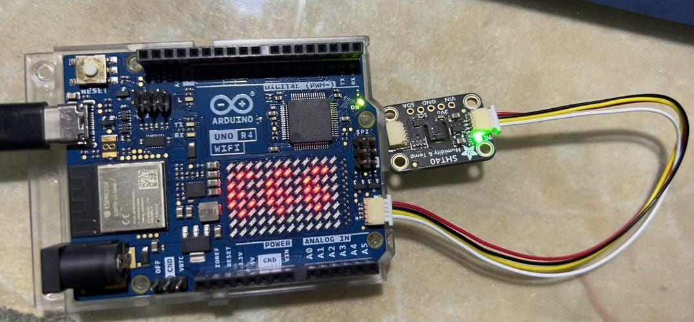

Arduino UNO R4 WiFi

UNO 家族的现代化升级，Renesas RA4M1 主控（Cortex-M4 48MHz）加 ESP32-S3 无线模组，12 位 ADC、12×8 LED 矩阵与 Qwiic 接口齐备，经典扩展板兼容，兼顾新手友好与联网需求。
客观评测
UNO R4 WiFi 采用 Renesas RA4M1（Cortex-M4 48MHz、256KB Flash、32KB SRAM）加 ESP32-S3 无线组合，提供 14 路数字 IO、6 路 12-bit ADC、1 路 DAC，并加入 CAN 总线、Qwiic 接口与 12×8 LED 点阵。保持 UNO Shield 物理兼容，供电支持 USB-C 与 6-24V VIN。
主观点评
对用惯 UNO 的人来说，R4 WiFi 是一次“不用换脑子”的升级：代码、扩展板照旧，ADC 精度和 USB-C 却都是实打实的改善，板载 LED 点阵拿来调试状态显示意外好用。想联网做个气象站、做个遥控开关，加个 ESP32 模组就搞定。要说不足，就是性能依旧温和，跑复杂算法还得另请高明。它像一辆换了电控的经典老车——好开、可靠、不惊艳。
优点与不足
- 经典 UNO 外形与 Shield 兼容，老项目无缝迁移
- 自带 Wi-Fi/蓝牙与 Qwiic 接口，联网项目免焊转接
- 12 位 ADC 与 DAC，测量精度比老 UNO 大幅提升
- 主频 48MHz，算力低于同价位 ESP32 类开发板
- 双芯片架构在个别高级无线用例下配置略繁琐
参数规格
| 主控 | Renesas RA4M1（R7FA4M1AB3CFM） |
|---|---|
| 内核 | Arm Cortex-M4，主频 48MHz |
| Flash / RAM | 256KB Flash / 32KB SRAM |
| 无线模组 | ESP32-S3（Wi-Fi 802.11 b/g/n、蓝牙 5.0 / BLE） |
| 数字 IO | 14 个（其中 6 路 PWM） |
| 模拟输入 | 6 路 12-bit ADC |
| DAC | 1 路 12-bit DAC 输出 |
| 通信接口 | UART、I2C、SPI、CAN |
| 板载外设 | 12×8 LED 点阵、Qwiic I2C 连接器 |
| 供电 | USB-C 或 VIN 6-24V，板载稳压 |
| USB | USB-C（可作 HID 键盘/鼠标） |
| 兼容性 | 兼容 UNO 扩展板（Shield） |
| 开发环境 | Arduino IDE、Arduino Cloud |